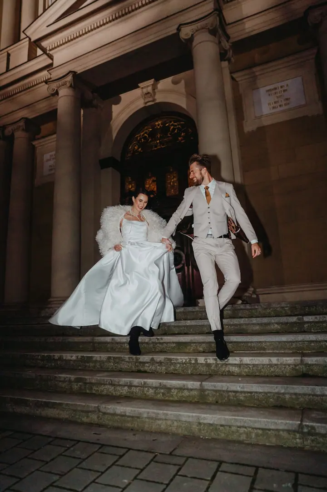
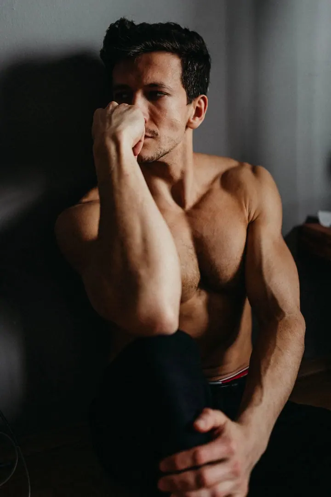
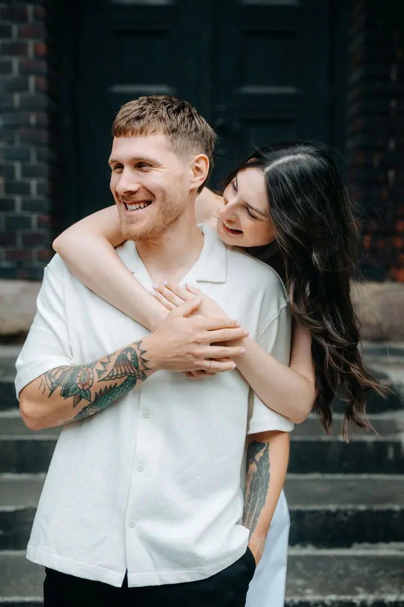
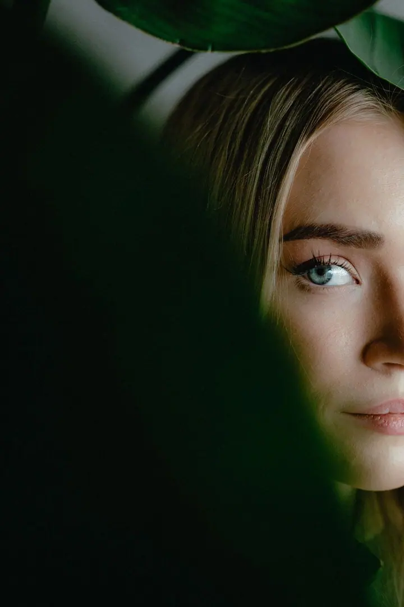

01 / 04
Svatební fotografie
Svatby fotím v dokumentárním stylu, nespoutaně, elegantně a intimně. Vyberete si půl dne, celý den nebo elopement jen ve dvou.
Zeptat se na termín→



Svatby v dokumentárním stylu
Zeptat se na termín →(01) Ahoj
Jmenuji se Nikola Tesařová a nejvíc mě učarovala svatební fotografie , protože můžu citlivě zachytit vaši radost, štěstí a lásku. Fotím také páry, těhotné a rodiny v Ostravě a okolí. A když je potřeba, vyrazím i na koncert nebo firemní akci .
(02) Co fotím
01 / 04
Svatby fotím v dokumentárním stylu, nespoutaně, elegantně a intimně. Vyberete si půl dne, celý den nebo elopement jen ve dvou.
Zeptat se na termín→02 / 04
Nejde mi o strojené pózy, ale o skutečné vztahy, blízkost a atmosféru mezi vámi. Fotím i předsvatební focení.
Zeptat se na termín→03 / 04
Přirozené rodinné fotky venku, ideálně hodinu před západem slunce. Ráda přijedu na vaše oblíbené místo.
Zeptat se na termín→Dále nabízím
Fotím koncerty a party, konference, workshopy, produkty, jídlo i portréty pro firmy.
↗(04) Postup
Od první zprávy po hotovou galerii.
Krok 1 z 4
Do formuláře mi napište datum a místo svatby a pár řádků o sobě a o tom, co si představujete.
Krok 2 z 4
Pošlu vám kompletní nabídku. Každý balíček můžeme libovolně upravit podle toho, co potřebujete.
Krok 3 z 4
Přijedu za vámi a fotím přirozeně, bez strojených póz. Na svatbu vám můžu zdarma zapůjčit Instax a rekvizity do fotokoutku.
Krok 4 z 4
Odevzdávám všechny povedené snímky ve vlastní online galerii. Ke svatbě dostanete i krabičku s dřevěným USB diskem a tištěné fotky.
Autentické, emotivní a nadčasové fotografie vašich příběhů
(05) Za objektivem
Zbožňuji fotografii v jejím nejširším významu. Ráda fotím různá odvětví, od rodin přes portréty až po koncerty a festivaly, ale srdcem jsem u svateb. Fotím je v dokumentárním stylu a snažím se, aby fotky působily autenticky, emotivně a nadčasově.
Preferuji osobní přístup a je pro mě velmi důležité, abyste byli na focení v pohodě a užili si ho. Nejde mi o strojené pózy, ale o skutečné vztahy, blízkost a jemnost mezi vámi. Všechny fotografie upravuji, ale vždycky s důrazem na přirozenost, a vybrané snímky převádím i do černobílé.
Sídlím v Ostravě, ale dojedu kdekoliv. Nejraději fotím hodinu před západem sluníčka, ale i deštivý den umí vytvořit originální vzpomínky. Nebráním se ničemu, tak se klidně ozvěte.
Nikola
Nikola Tesařová · Svatební a rodinná fotografka
Varianta Bronze stojí 2 800 Kč (10 upravených fotek), Silver 3 500 Kč (30 fotek) a Gold 4 800 Kč (všechny povedené snímky, zpravidla kolem 70).
Nabízím půl den (4 hodiny), celý den EASY (8 hodin) a celý den PREMIUM (12 hodin). Kompletní nabídku vám ráda pošlu e-mailem, stačí mi napsat datum a místo.
Sídlím v Ostravě a ráda fotím třeba v Komenského sadech, v Bělském lese, v Malenovicích nebo u Ostravice. Pokud máte vlastní oblíbené místo, třeba kavárnu, dojedu za vámi.
Ano, elopement nebo malou svatbu s nejbližšími fotím ráda a můžu vám být i svědkem. Cenu domlouváme individuálně podle vašich přání.
(07) Kontakt
Napište pár vět o tom, co si představujete, a termín, který se vám hodí.